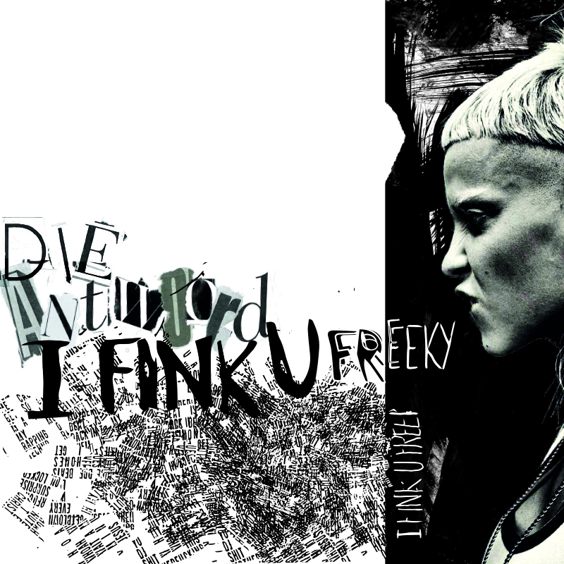
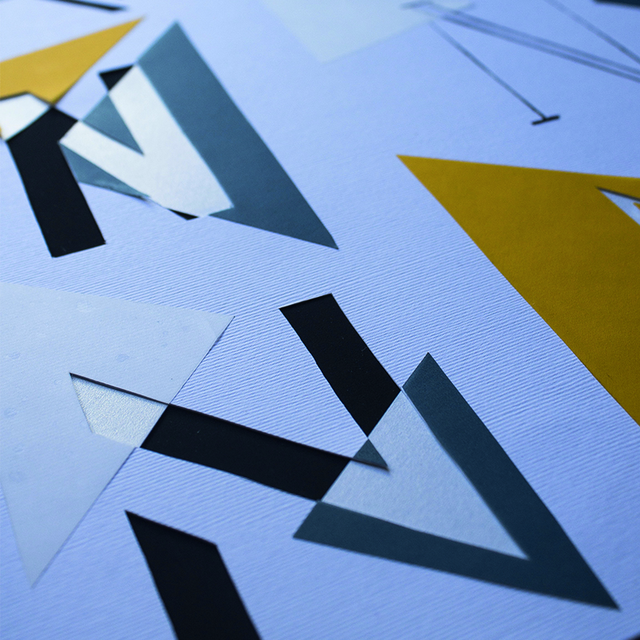
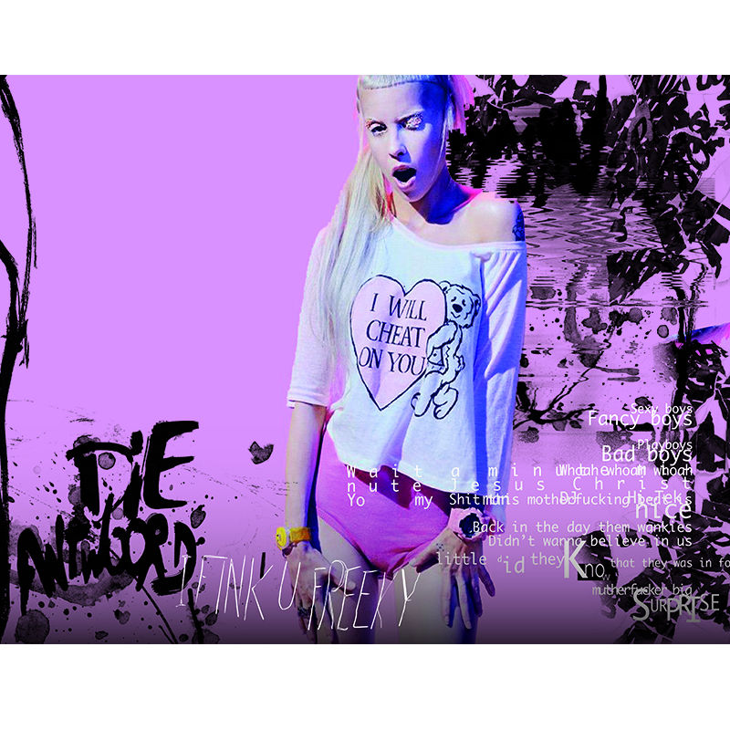
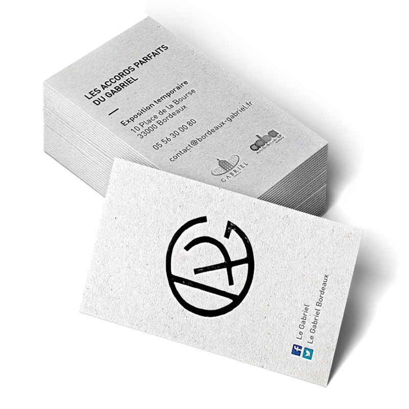

- 
-

- 
- 
-

-

- 
Master design à l'ECV Bordeaux Pratique de Photoshop, Illustrator, Indesign et After Effects. Connaissances Html/CSS
2016: Stage 4 semaines à l'agence Pango
2017: Stage 4 semaines à l'agence Pango
That all may enter without privilege or prejudice accorded by race, economic power, military force, or station of birth.
We are creating a world where anyone, anywhere may express his or her beliefs, no matter how singular, without fear of being coerced into silence or conformity.
Your legal concepts of property, expression, identity, movement, and context do not apply to us. They are all based on matter, and there is no matter here.
Our identities have no bodies, so, unlike you, we cannot obtain order by physical coercion. We believe that from ethics, enlightened self-interest, and the commonweal, our governance will emerge. Our identities may be distributed across many of your jurisdictions. The only law that all our constituent cultures would generally recognize is the Golden Rule. We hope we will be able to build our particular solutions on that basis. But we cannot accept the solutions you are attempting to impose.
In the United States, you have today created a law, the Telecommunications Reform Act, which repudiates your own Constitution and insults the dreams of Jefferson, Washington, Mill, Madison, DeToqueville, and Brandeis. These dreams must now be born anew in us.
You are terrified of your own children, since they are natives in a world where you will always be immigrants. Because you fear them, you entrust your bureaucracies with the parental responsibilities you are too cowardly to confront yourselves. In our world, all the sentiments and expressions of humanity, from the debasing to the angelic, are parts of a seamless whole, the global conversation of bits. We cannot separate the air that chokes from the air upon which wings beat.
You are trying to ward off the virus of liberty by erecting guard posts at the frontiers of Cyberspace. These may keep out the contagion for a small time, but they will not work in a world that will soon be blanketed in bit-bearing media.
Your increasingly obsolete information industries would perpetuate themselves by proposing laws, in America and elsewhere, that claim to own speech itself throughout the world. These laws would declare ideas to be another industrial product, no more noble than pig iron. In our world, whatever the human mind may create can be reproduced and distributed infinitely at no cost. The global conveyance of thought no longer requires your factories to accomplish.
These increasingly hostile and colonial measures place us in the same position as those previous lovers of freedom and self-determination who had to reject the authorities of distant, uninformed powers. We must declare our virtual selves immune to your sovereignty, even as we continue to consent to your rule over our bodies. We will spread ourselves across the Planet so that no one can arrest our thoughts.
We will create a civilization of the Mind in Cyberspace. May it be more humane and fair than the world your governments have made before.